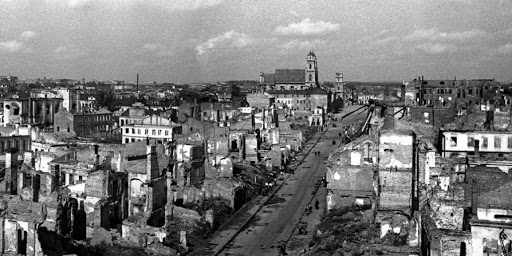
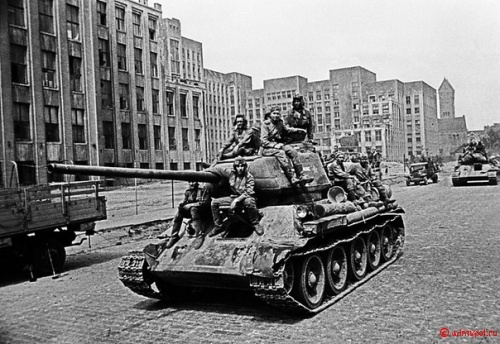
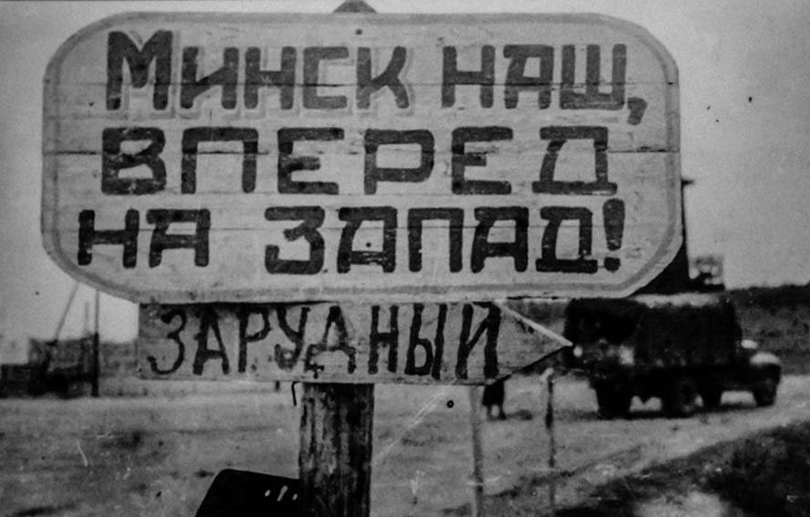

Войска 3-го Белорусского и 1-го Белорусских фронтов одновременно в сходящимся направлении нанесли удар по противнику в направлении Минска. Одновременно с этими действиями войска 1-го Прибалтийского фронта совместно с отдельными соединениями 3-го Белорусского и 2-го Белорусского фронтов, продолжили стремительно наступление в западном направлении, уничтожая подходящие подкрепление противника, и занимая плацдарм для последующего развития наступления советских войск. Весомую помощь войскам оказали белорусские партизаны, устраивавшие засады на путях отступления немецких сил, громили штабы, уничтожали мосты и переправы. Далее совместно с войсками 2-го Белорусского фронта было завершено окружение Минска.
29-30 июня 1944 года войска 3-го Белорусского фронта вышли к Березине, форсировали её и продолжили стремительное продвижение на Минск. 3 июля танковое подразделение ворвалось в город. Вскоре было завершено окружение основных сил 4-й армии Третьего рейха, всего — 105 тысяч человек. К 11 июля немецкая группировка была полностью ликвидирована: свыше 70 тысяч человек было убито и около 35 тысяч взято в плен.
За умелые и героические действия в ходе Минской операции 1944 г. 52 соединения и части были удостоены почётного наименования «Минские».

 К исходу 3 июля 1944 года город Минск был освобождён.
Была ликвидирована значительная группировка сил противника, чем был нанесён сильный урон немецким дивизиям на Восточном фронте.
Чтобы прочитать про город Минск наведите курсор на картинку ниже.
| Назад | На главную | Далее |